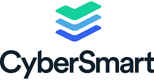

CyberSmart 1
A UK based start-up, located in London, CyberSmart is specifically targeted toward SME’s (small and medium enterprises), offering a range of products designed to protect companies. Amongst the products they offer CyberSmart, Cyber Essentials, Cyber Essentials Plus, GDPR and certOS™.
CyberSmart has done work with CYLON, Startling Bang, IASME, IQ CAPITAL and Google for startups Accelerator 2020. A company that you surely must keep and eye out for.